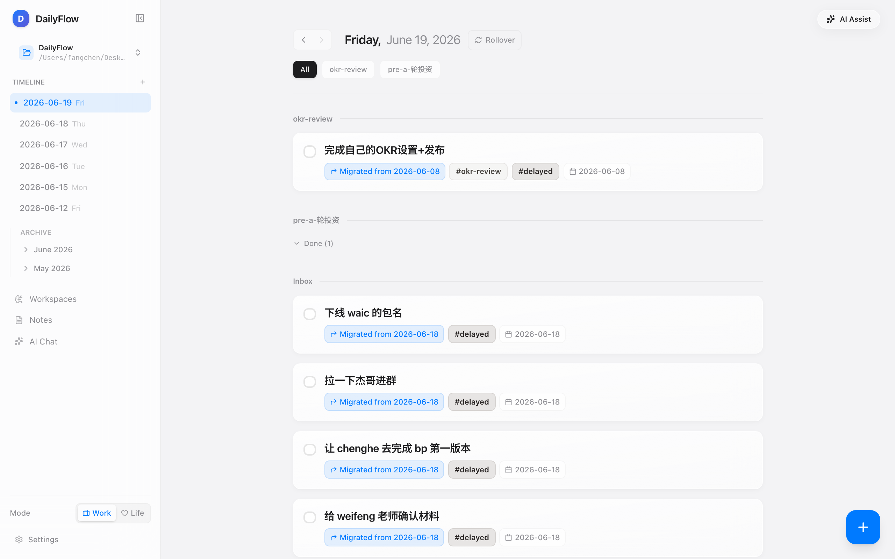
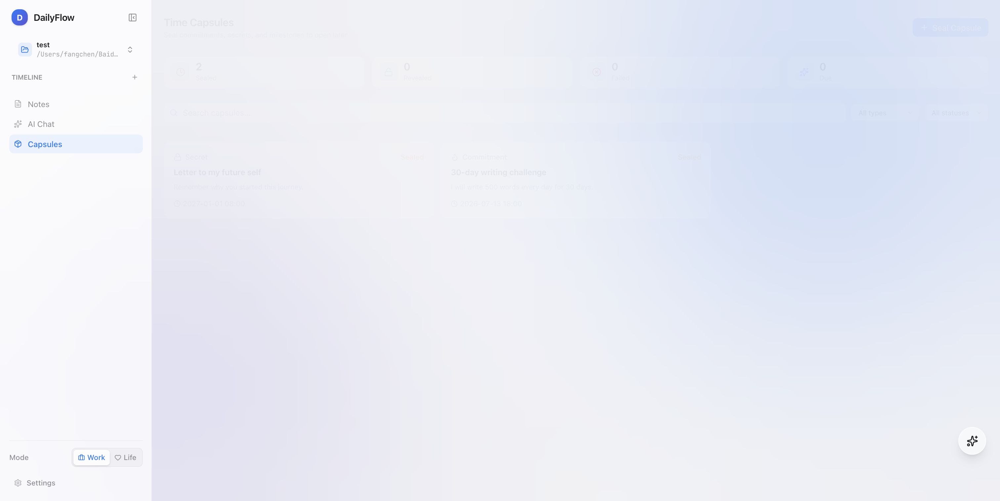
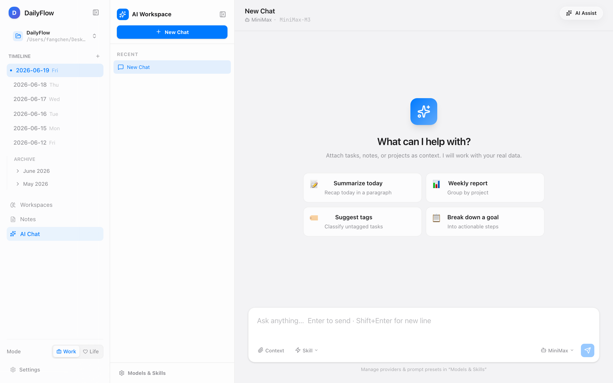
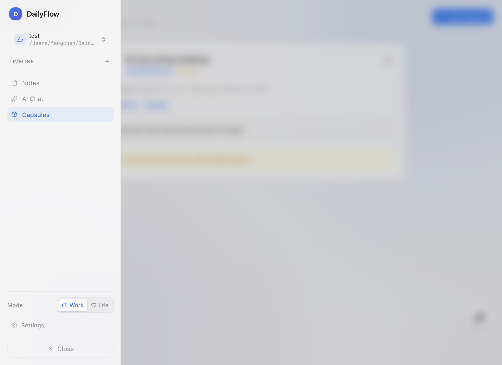

本地优先的日程 / 笔记 / AI 助手 + 真实 EVM 多链时间胶囊
——把今天的 flag，写给未来的自己；用一条链，把承诺锁住。
A local-first daily workspace with a real EVM time-capsule —
write today's flag, sealed for the future to open.
ChatGPT 推出 24 个月后，2026 年全球月活对话助手用户突破 20 亿，AI 不再只是开发者工具。
Within 24 months of ChatGPT's launch, monthly consumer chatbot users crossed 2B in 2026 — AI is no longer a developer-only tool.
MetaMask + Rabby + WalletConnect 月活地址首次同时跨过千万级门槛，个人级签名行为已经成为日常。
MetaMask + Rabby + WalletConnect MAUs all crossed 10M in 2026 — personal-level signing is now routine.
承诺疲劳（commitment fatigue）是常态。写下承诺的人很多，坚持下来的人极少——而这两条曲线，正是 AI 与 Web3 共同缺的那一格。
Commitment fatigue is the norm. The gap between promising and keeping is the slot neither AI nor Web3 has filled — yet.
DailyFlow 是给"承诺"一个位置的产品。它不是又一个 AI 笔记，也不是又一个钱包——它是把今天的你写下的东西，用一个哈希交给未来的你。让 AI 帮你整理，让链帮你记住。
DailyFlow gives a promise a place. Not another AI note, not another wallet — it is the act of handing today's you to future-you, by hash. AI tidies. The chain remembers.
"我明年要读完 30 本书"出现在朋友圈里 24 小时就被新的内容覆盖。承诺没有自己的位置，更没有证据。
"I'll read 30 books next year" survives 24 hours on a feed before being buried. A promise has no place of its own — and no evidence.
普通备忘录到点不会提醒你，必须靠"明天的自己"记得再打开。但明天的自己早就忘了昨天的决心。
Notes do not remind future-you. They rely on tomorrow-you remembering yesterday's resolve — and tomorrow-you rarely does.
公开发朋友圈太暴露，纯私人备忘录又太轻——既想要一份"未来才能拆开"的仪式感，又不想把心事交给云端 SaaS。
Public posts are too exposed; private notes are too light. People want a ceremony of "open it in the future" without trusting a cloud SaaS.
承诺失败没有任何客观记录，也没有第三方可以"打开看一看"——既不能被原谅，也无法被量化。下一个承诺又从零开始。
There is no objective record of failure — and no third party that can "open and look". The next promise starts from zero again.
我们把希望寄托给了日历提醒，
把仪式感让位给了朋友圈——
没有人给承诺一个真正的位置。
We delegate hope to a calendar reminder
and surrender ceremony to a social feed —
no one gave the promise a real place.
缺的不是 AI，
是一个让承诺被未来看见的
载体。
What's missing is not AI —
it is a witness
that the future can open.
承诺不需要更多 AI。它需要一条链——不是金融意义上的链，而是一条让"明天的自己"无法抵赖的时间锁链。
再叠加一个AI 整理层，把今天零散的念头拆解成可执行的下一步，把明天的复盘变成可以追溯的对话。
三层一起，承诺就有了自己的位置、证据、和仪式感。
A promise does not need more AI. It needs a chain — not in the financial sense, but a time-lock chain that tomorrow-you cannot deny.
Stack an AI layer that decomposes today's scattered thoughts into tomorrow's actions and turns reviews into traceable dialogue.
Together the three layers give every promise a place, an evidence trail, and a ceremony.
三层不是抽象口号。L1 是 145 个测试覆盖的 Markdown 解析与迁移；L2 是 15+ 模型供应商的同一接口；L3 是 8 个 Hardhat 测试全绿的真实合约。
Three layers, not slogans. L1 is a Markdown parser + auto-rollover engine covered by 145 tests; L2 is a single interface across 15+ providers; L3 is a real Solidity contract with 8 passing Hardhat tests.
选择 Commitment / Secret / Milestone 类型，写入 title、content、unlockAt；本地先存全文。
Pick Commitment / Secret / Milestone, write title / content / unlockAt; plaintext is stored locally first.
调用 seal(bytes32, uint256, CapsuleType, bool)：原文 keccak256 后写入，链上仅存哈希。
Call seal(bytes32, uint256, CapsuleType, bool): keccak256 the body, write only the hash.
到 unlockAt 之后，本地用哈希校验原文，并把胶囊标记为可打开；可选 reveal() 上链公开状态。
Past unlockAt, the app re-hashes the body, marks the capsule openable, and may reveal() on-chain.
每条胶囊都带 txHash + chainId + contractAddress + onChainId。失败可以选 Failed（认输），想延期可以选 Extended（再战）。
Every capsule carries txHash + chainId + contractAddress + onChainId. Failed lets you admit it; Extended lets you fight again.
"未来自己无法删除、无法篡改，只能打开。"
"Future-you cannot delete or rewrite — only open."
原文始终保存在你选择的本地 Markdown 工作区。链上只存两样东西：keccak256 哈希（不可逆推）+ unlockAt 时间锁（到点之前不可读）。
钱包只是签名工具，不上传任何明文。任何第三方、包括我们，都无法从链上数据反推胶囊内容。
Plaintext stays in your local Markdown workspace. On-chain holds only two things: a keccak256 hash (irreversible) and an unlockAt time-lock (unreadable before the moment).
Your wallet is only a signer — no plaintext is uploaded. No third party, including us, can reverse the capsule from chain data.
今日任务 / 笔记 / 项目作为上下文注入，可以直接生成任务或保存笔记。
Today's tasks / notes / projects injected as context; AI can create tasks or save notes directly.
复杂事项先丢进 Scratchpad，AI 整理成 Brief → Journey → 可执行的子任务。
Drop a complex thing into Scratchpad, AI turns it into Brief → Journey → executable subtasks.
把零散想法倒进去，AI 自动提取、分类、去重，按项目或日期归档。
Pour scattered thoughts in, AI extracts, dedupes and archives by project / date.
选择时间范围和提示词，生成结构化日报/周报；可作为笔记保存或发到对话。
Pick a range and prompt, generate structured daily / weekly reports; save as notes or send to chat.
润色 / 续写 / 提取待办 / 整理会议纪要；笔记可一键"发到对话"作为上下文。
Polish · continue · extract action items · meeting minutes; one-click "send to chat" as context.
⌘⇧R 全局录制 + Whisper 转录 + LLM 抽 action items，确认后落盘为任务。
⌘⇧R global record + Whisper transcription + LLM action-items; confirm then write to tasks.




// SPDX-License-Identifier: Apache-2.0 pragma solidity ^0.8.24; contract DailyFlowCapsule { enum CapsuleType { Commitment, Secret, Milestone } enum Status { Sealed, Revealed, Failed, Extended } struct Capsule { address creator; bytes32 contentHash; uint256 unlockAt; CapsuleType capsuleType; Status status; } function seal( bytes32 contentHash, uint256 unlockAt, CapsuleType capsuleType, bool isPublic ) external returns (uint256 id) { require(contentHash != bytes32(0), "empty hash"); require(unlockAt > block.timestamp, "unlock in future"); capsules[id] = Capsule(msg.sender, contentHash, block.timestamp, unlockAt, capsuleType, isPublic); emit CapsuleSealed(id, msg.sender, contentHash, unlockAt, capsuleType, isPublic); } function reveal(uint256 id, Status status) external onlyCreator(id) { capsules[id].status = status; emit CapsuleRevealed(id, msg.sender, status); } }
进入 DailyFlow 桌面端，演示本地优先架构：所有 markdown 文件就在你这个工作区里。
Open the DailyFlow desktop, demonstrate local-first: every markdown file is in your workspace, not in our cloud.
类型选择 Commitment，标题"30 天读 6 本书"，内容写出你的计划，unlockAt 设为 30 天后。
Pick Commitment, title "6 books in 30 days", paste your plan, set unlockAt to 30 days later.
点击 seal() —— 应用本地 keccak256 哈希，写入 8/8 测试全绿的智能合约，返回 txHash。
Click seal() — keccak256 the body locally, write to the smart contract (8/8 tests green), get the txHash.
CapsuleSealed 事件已经在链上。DailyFlowCapsule 31237 上你看到 contentHash 和 unlockAt。
The CapsuleSealed event is on-chain. On DailyFlowCapsule #31237 you see contentHash + unlockAt.
30 天后，本地哈希校验通过，reveal() 把状态推到 Failed 或 Revealed —— 把履约真相写进历史。
30 days later, the local re-hash passes, reveal() writes Failed or Revealed — the truth of the promise goes into history.
2026 年主要助手厂商的月活已跨过消费级拐点——AI 成为大众日常。
By 2026 the leading assistants crossed the consumer inflection point — AI is daily life.
签名的对象从 swap 转向签名验证、内容哈希、社交图谱；个人用途首次超过交易用途。
Signed objects are shifting from swaps to verification, content hashes, social graphs; personal use surpasses trading.
AI 内核 × 本地 Markdown × EVM 时间胶囊 = 唯一一个给承诺上"个人链"的产品形态。
AI core × local Markdown × EVM time-capsule — the only shape that puts a personal chain on a promise.
把承诺的履行状态作为链上可读的指标——治理参与者的 commitment-score 影响投票权重。
Make the outcome of a promise an on-chain-readable signal — commitment-score feeds governance voting power.
把"我要戒烟/戒游戏/戒深夜外卖"的押金锁进合约，达成则退还，未达成则捐给公益。
Lock the stake for "quit smoking / quit gaming / quit late-night orders" — refund on success, donate on failure.
毕业 / 买房 / 升职 / 宝宝出生——把里程碑时间锁到自己 70 岁的链上对账单里，给未来的家人留下一份可验证的时间轴。
Graduation / home / promotion / birth — lock milestones to a 70-year-old statement on-chain, leaving family a verifiable timeline.
如果你把所有"承诺"都交给 DailyFlow——退休那一刻，你不需要写回忆录——链上数据本身就是一份完整的、不可篡改的人生复盘。这是 DailyFlow 的终极想象。
If you give DailyFlow every promise — on retirement, you don't need to write memoirs. The on-chain data is the whole, tamper-proof life review. That is DailyFlow's ultimate imagining.
如果 DailyFlow 拿下1 万早期承诺者，平均每人每年写下100 条胶囊——链上一年就会新增100 万条见证。
这是下一条人类规模的人生协议。
If DailyFlow wins 10,000 early pledgers and each writes 100 capsules/year, the chain will accrue 1M+ on-chain witnesses / year.
This is the next protocol at human scale.
DailyFlow 已经把这条路走通了一半：本地优先的工作流是真在跑的，AI 内核是真在接的，EVM 时间胶囊是真在签的。剩下的，是和你一起看见下一个千万级承诺。
DailyFlow has already walked half of this road: a real local-first workflow, a real AI core, a real EVM capsule. What remains is to witness the next ten-million promises — with you.